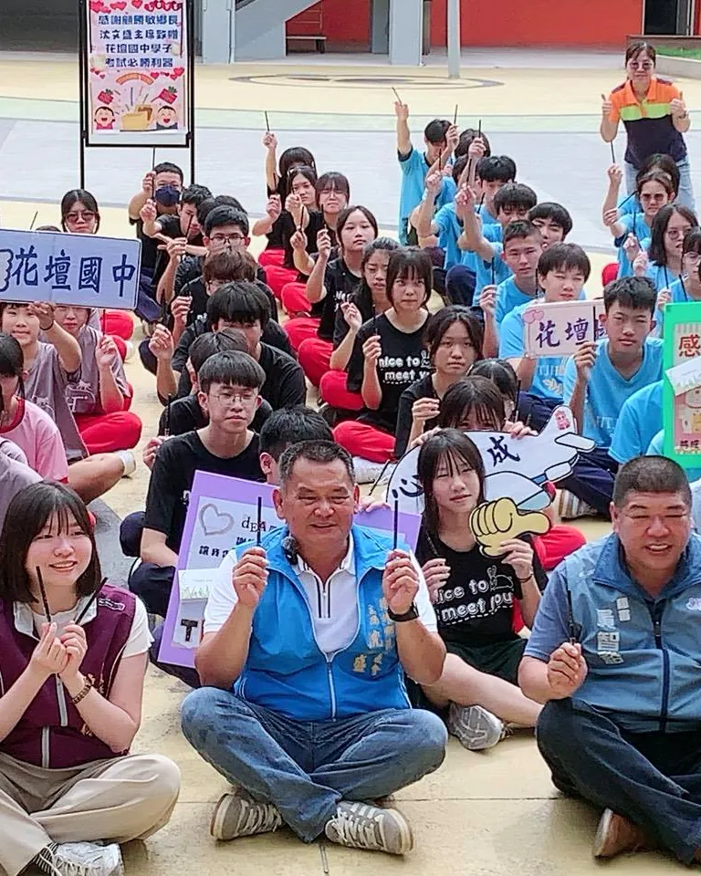
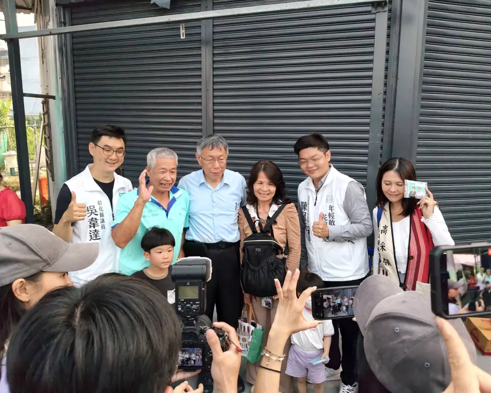

01 / 04
專業治理、幸福花壇、守護未來——這是我給家鄉的承諾。
我是陳冠豪，土生土長的彰化子弟。在花壇土生土長，生活超過三十年——這裡是我成立家庭、養育孩子的地方。花壇擁有優越的地理位置與深厚的產業底蘊，但長期以來，我們深刻感覺家鄉的發展停滯不前，缺乏前瞻性的整體規劃。
看著同年齡層的年輕人外流、產業斷層，我認為花壇需要注入「年輕力量」。我選擇站出來，是為了打破傳統政治的消極與遲緩，用創業家的效率與爸爸的細心，推動家鄉年輕化，讓年輕一代願意留在花壇打拼、安居樂業。
我具備勇於表達、實事求是的特質，這將是我未來在議事廳為民喉舌、守護市民權益最強大的後盾。家庭帶給我的責任感，是我投入公共事務最堅定的動力來源；事業軌道穩定，這使我能不被利益誘惑，保持參選初衷，將百分之百的精力投入到監督鄉政與服務花壇鄉親的事務上。
我主張「專業監督、資源共享、守護下一代」。以理性、務實、科學的態度進入代表會，確保預算花在刀口上，並以「親子」與「產業」為雙核心，為花壇找回失落的發展動能。
用創業家的效率與會計頭腦，把每一筆預算花在刀口上、檢驗每一條政策的執行成果。
親子友善的特色公園、平價育兒資源、校園通學安全——讓爸媽不必跨鄉鎮就能育兒。
在地中小企業轉型升級、青年創業生態、弱勢兒童照顧網——把家鄉的未來，留給下一代。
從家族傳統產業的薰陶，到自己白手起家創立公司——把產業實戰的經驗，帶進鄉政服務。
從母校花壇國中的學弟妹們，到虎山岩的觀音信仰，到掃街拜票的每一條巷弄——
每一張照片背後，都是和花壇鄉親的真實連結。


以「專業治理、幸福花壇、守護未來」三大主軸，把理念拆解為 8 項可被檢驗、可被執行的具體行動。
推動花壇設置特色公園與兒童遊樂設施，增加親子休憩空間，讓家長不必跨鄉鎮通勤育兒。把童年留在花壇。
整合閒置空間，推動平價且優質的育兒資源，降低年輕家庭的養育負擔。讓每對年輕爸媽都敢生、養得起。
全面體檢花壇鄉內校園基礎設施，加強學童通學步道的安全性，改善交通盲點與肇事熱點，讓孩子上學每一步都安心。
系統性盤點 6 村內易積水、坑洞、號誌不足路段，建立公開的修繕進度地圖，讓每一筆建設經費都看得見、追得到。
憑藉腳踏車零組件創業實戰，串聯花壇磚窯、金墩米、茉莉花茶等在地產業鏈，協助傳統產業導入數位行銷與品牌升級。
整合中小企業協會資源，建立青年返鄉媒合平台、創業導師制度，讓 30〜40 歲的世代願意把根扎回花壇。
家扶扶幼會員經驗的延伸，協助完善社會福利與育兒政策，串連學校、社區、廟宇，把每一個孩子都接住。
用創業家的會計頭腦，建立公開的服務案件追蹤平台。每一筆建設預算去向、每一件選民服務進度都應該被看見。
花壇鄉民代表會共設 3 個選舉區、共 11 席。第一選區涵蓋的 6 個村，是花壇鄉的核心生活圈，也是冠豪生活逾 30 年的家。
花壇鄉是台灣著名的金墩米產地，有三家春茉莉花茶、虎山岩觀音聖地、磚窯文化、八卦山系列農產等豐厚資產。緊鄰彰化市與員林市，交通便利、台鐵設站。
可惜，這份潛力長期沒被好好翻譯成發展動能。產業斷層、青年外流、育兒資源不足——這就是「翻轉」的真正起點。
道路、育兒、教育、產業——任何鄉親生活上的疑難雜症，請直接聯絡冠豪服務團隊，
我們會在 24 小時內回覆。
把您的一票，交給願意用新方法做事的年輕爸爸
加入 LINE 好友 ／ 隨時聯絡